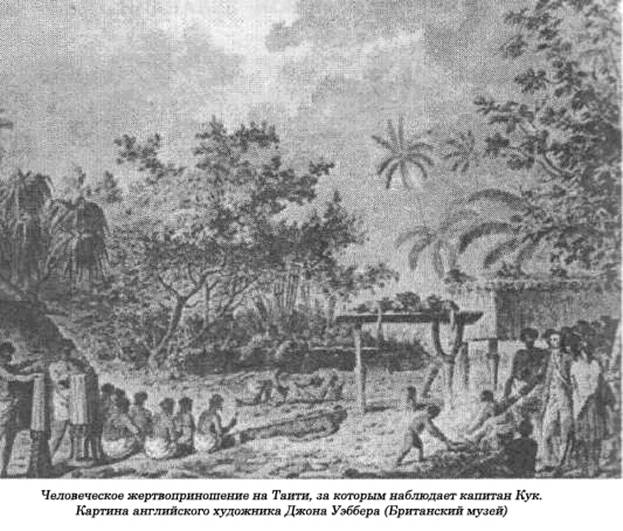

Каннибалы Новой Зеландии.
Население Новой Зеландии едва достигает четверти населения соседней Австралии, поэтому новозеландская народность майори составляет куда более значительную в процентном отношении часть общего населения по сравнению с австралийскими «чернокожими». До сих пор в племени майори на этих двух островах насчитывается около 50 тысяч человек. Среди всех полинезийцев майори славятся своими великолепными художественными промыслами и свирепостью обычаев. Этот народ всегда обожал войну, и, пользуясь размерами своей территории, они проводили военные операции такого масштаба, которые и не снились воинственным туземцам на других островах Тихого океана. Впервые они захватили остров Северный в Новой Зеландии, перебравшись туда, вероятно, с Гавайских островов еще около 1000 г. н.э., а может, и с Таити, но в отличие от таитянцев майори были свирепыми, жадными каннибалами. Если судить по их «крутым» нравам, то вряд ли справедливо предположение, что они позаимствовали у фиджийцев совсем немного. Скорее всего, они оказались вполне способными учениками тамошних каннибалов. Существует и другая версия их происхождения, в которой говорится, что майори — выходцы из Индии или даже Центральной Азии, которые добрались до Новой Зеландии через Малайзию.
Но в основном они полинезийцы, хотя, если судить по их свирепости, скорее хранители традиций Меланезии, чем Полинезии.
Капитан Джеймс Кук, который первым из белых еще в 1770 году открыл остров Северный в Новой Зеландии, очень скоро стал свидетелем каннибалистских пристрастий местных жителей.
Элдсон Бест, известный специалист по наследию майори, просто поражен глубоко укоренившейся у этого народа привычкой к каннибализму, с чем ему неоднократно приходилось сталкиваться в ходе своих научных исследований.
Как же произошло, недоумевает он, что наш такой милый туземец-майори превратился в закоренелого каннибала на этих островах? Как бы там ни было, он считает, что майори — это выходцы из островов Общества, которые совсем не были, как мы уже видели, крупным очагом людоедства в этом регионе. Может, каннибализм был настолько широко распространенным обычаем, что майори просто не могли его не перенять, продолжает задавать вопросы ученый. Нельзя, однако, забывать, говорит он, что эта отвратительная привычка майори, или, по крайней мере временная привычка, — вырывать из могил мертвецов и пожирать их, была и распространенным обычаем среди туземцев островов Фиджи.
Капитан Кук пришел в ужас от каннибалистской практики в Новой Зеландии, тем более что ему приходилось тогда с этим часто сталкиваться — он наносил на морскую карту восточное побережье островов. Его «Дневники» — это волнующий, поразительный, на многое открывающий глаза документ, свидетельствующий о том, что ожидало в те далекие времена в этих местах исследователей и путешественников, и сам автор наверняка сильно удивился бы, узнай он, что и через сто лет после его открытия уклад жизни местного населения так существенным образом и не изменился. В его «Дневниках» кроме всего прочего подробно рассказывается о плавании на корабле «Эндевор», на котором он посетил острова Общества и остров Таити до того, как отправиться для топографической съемки восточных побережий Новой Зеландии и Австралии. Таитянцы, которых он взял с собой в свое последнее путешествие, почувствовали себя плохо, когда увидели эти чудовищные картины: «Свежий северный ветерок, дувший весь день 23 ноября, помешал нам выйти в море, как планировалось. Вечером несколько моих офицеров отпросились на берег, где намеревались немного поразвлечься среди туземцев. Там на пляже они увидели голову и кишки недавно убитого юноши, а его сердце было нанизано на вилкообразную ветку дерева, помещенную на носу одного из больших каноэ. Один из офицеров купил голову и принес ее на корабль, отрезанный от нее кусок мяса сварили, а один из туземцев жадно его съел прямо на глазах у команды. В это время я сам находился на берегу, но, как только я вернулся на борт, мне сразу об этом сообщили. Я увидел, что на юте полно туземцев, а сильно искалеченная голова, или, скорее, то, что от нее осталось, лежала на гекаборте. Череп был проломлен с одной стороны, прямо под виском, и, судя по лицу, жертве не было и двадцати.
Вид проломленной головы, который я связывал с вышеуказанными обстоятельствами, наполнил все мое существо леденящим ужасом, и я не испытывал ничего кроме ненависти к этим ужасным каннибалам. Как ни странно, мне все же удалось взять себя в руки, тем более что распускать нервы — дело напрасное. Мне хотелось самому стать очевидцем факта, который я до сих пор еще подвергал сомнению, и тогда я приказал сварить еще мяса и принес его на ют, где его сожрал с невиданной жадностью один из туземцев. Это произвело такой эффект на присутствующих, что многих стошнило. Один таитянец, который плавал с нами и прежде, был настолько поражен этой дикой сценой, что окаменел, превратился в охваченное ужасом изваяние. Трудно описать выражение на его лице.
Когда его кто-то из наших подтолкнул и он вышел из оцепенения, он разразился слезами. Он то рыдал, то ругался, говорил, что все мы злые люди и он больше не будет с нами дружить. Он даже теперь к нам не прикоснется. Бедняга обругал и того человека, который готовил голову, отказываясь даже прикоснуться к лезвию ножа, которым тот в ходе этой операции пользовался. Таково было его искреннее возмущение диким обычаем, и его примеру должен следовать любой здравомыслящий человек.
Когда на следующий день, 24 ноября, к нам прибыли наши друзья, чтобы попрощаться перед отплытием, они сообщили, что сердце этого несчастного юноши все еще торчит на ветке, а кишки лежат на песке. Однако среди внутренностей нет ни печени, ни легких, вероятно, все это туземцы съели. Исчезло и туловище юноши. Видимо, и ему была уготована точно такая судьба».
Из этого отрывка следует, что Кук со своими офицерами был относительно на короткой ноге с туземцами-каннибалами, или «джентльменами», как англичане их в насмешку называли. Эти люди продемонстрировали им то, что повсеместно на островах считалось вполне нормальной практикой. Но их взаимоотношения не были всегда столь безоблачными. Повсюду в его «Дневниках» сталкиваешься с эпизодами, когда всем им грозила реальная опасность. Причем опасность двойная, и ни та, ни другая не таили в себе ничего особо привлекательного...
«Мы оказались в такой ситуации, находясь всего в двух кабельтовых от скал, и там мы пребывали во власти прилива с семи вечера и почти до полуночи. Море у этих скал ужасно, угрожающе пенилось. Опасность была рядом, вот она, а выход из нее весьма проблематичен. Я называю такие скалы, которым очень нравится вдруг возникать перед захваченными врасплох чужаками, «ловушками».
На борту «Эндевора» не было ни одного члена экипажа, который при кораблекрушении не предпочел бы скорее утонуть, чем попасть в руки туземцев-майори. Когда наш «Эндевор» медленно кружил возле острова Северного, то мальчики из этого племени со слезами умоляли нас: «Не ссаживайте нас на берег, там живут наши враги. Они убьют нас и съедят». Их слова, постоянно звеневшие у нас в голове, теперь становились печальной реальностью. Но, даже располагая свежей информацией о каннибализме местных жителей, команды все еще отказывались этому верить, верить собственным глазам. Мы поинтересовались у туземца Тупиа, на самом ли деле его соплеменники едят человеческую плоть, и он подтвердил это, добавив, правда, что они в основном едят трупы своих врагов, побежденных на поле сражения. Но мы теперь начали всерьез верить словам несчастных переполошившихся детишек, так как до сих пор считали, что их слова лишь преувеличение, обычное выражение растущего страха. Но несколько дней спустя мои люди обнаружили в лесу возле какой-то дыры в земле, похожей на туземную печь, берцовые кости, которые они принесли на корабль. Еще одно доказательство людоедства на острове».
Очень скоро Куку с его спутниками собственными глазами пришлось увидеть мрачную картину, когда люди с ужасающим остервенением глодали человеческие кости. Их руки и лица были запачканы свежей кровью, когда они свирепо отрывали своими острыми зубами куски человеческого мяса.

«От такого зрелища мы все пришли в ужас, — пишет он, — хотя все это было лишь наглядным подтверждением того, что уже приходилось слышать после нашего перехода к побережью. Кости, которые эти туземцы держали в руках, были несомненно человечьими, как и то мясо, которое они жадно сдирали с них зубами. Они вынимали их из специальной корзинки, а мясо, судя по его виду, уже прежде побывало на костре. На костях оставались царапины от зубов».
Капитан Кук был не просто отличным мореплавателем, отважным моряком и солдатом, он еще был вдумчивым наблюдателем с научным складом ума. Среди его спутников были и такие, которые во всем походили на него. Прежде всего это его верные товарищи Бэнкс и Соландер. Стараясь не выдавать своих собственных чувств, они использовали любую возможность, чтобы получше изучить самих туземцев, их привычки, обычаи и обряды, что во многом превратило «Дневники» Кука в превосходный научно-популярный репортаж. Подробный, точный и аккуратный отчет о том, что они видели, не идет в сравнение ни с одним описанием антропологов или других путешественников, которые побывали в этих местах после них.
«Это была небольшая, типично майорийская семья, — продолжает Кук, — состоявшая не больше чем из двенадцати человек. Когда мы спросили, кто был тот человек, кости которого лежали перед ними на столе, они рассказали нам, что пять дней назад в бухте показалась лодка со множеством их врагов. Это был один из семи пленников, убитых после набега».
Так как вся семья успешно справилась с лакомством и теперь от жертвы оставались только кости, то в течение одной недели они, по-видимому, не менее успешно покончили и с остальными шестью трупами, употребляя по трупу в день. Тогда Бэнкс рискнул бросить вызов. На самом ли деле они каннибалы или они этим не занимаются, а все эти куски — лишь части выброшенных кем-то тел? Но, увы, его ожидало глубокое разочарование. Когда Бэнкс протянул одному из них отрубленную руку, тот жадно вцепился в нее зубами, старательно обсасывая ее языком, каждым жестом, каждым своим взглядом давая всем понять, что такая еда доставляет ему удивительное наслаждение. Стоявший рядом Тупиа продолжал: «Ну, а где же голова жертвы?». «Мы не едим головы, — отвечал ему старик, — мы едим только мозги». Они принесли четыре головы из семи на корабль. На них целиком сохранилось все мясо и волосы, но мозгов не было. Мясо было мягким, оно, очевидно, уже подверглось предварительной обработке, чтобы предотвратить его от быстрого разложения, так как от него не исходило никакого тошнотворного запаха.
Позже, когда у капитана Кука было столько возможностей все как следует изучить и сделать соответствующие выводы по поводу каннибальской практики среди туземцев-майори, с которыми его связывали столь необычные отношения, он написал следующее:
«Этот обычай съедать своих врагов, убитых на поле брани (а я твердо уверен, что они кроме их мяса другого не едят), был заимствован ими в далеком прошлом. А нам хорошо известно, как трудно отучить целый народ от древних обычаев, какими бы жестокими и бесчеловечными они ни были, особенно если такой народ лишен всяких контактов с иностранцами. Потому что только через такие контакты, только через такое общение большая часть рода человеческого все лее стала вполне цивилизованной, а такого преимущества у новозеландцев никогда не было.
В спорах с Тупиа, который частенько горячо осуждал их варварский обычай, они прибегали к одному проверенному доводу — они поступают таким образом со своими врагами потому, что знают, что им грозит, окажись они сами в их руках. Потом они с самым невинным видом спрашивали: «Что может быть плохого в том, что мы съедаем своих врагов, которых убили в бою? Разве они, окажись на нашем месте, поступили бы иначе?».
Я часто слушал их беседы с Тупиа с большим вниманием, но ни один из его аргументов они так и не восприняли. Когда таитянец и наши люди демонстрировали свое отвращение к их чудовищной традиции, они только весело смеялись в ответ...»
Капитан Кук писал свои «Дневники» в 70-х годах XVIII века. Сто лет спустя о майори писал доктор Феликс Мейнар. Так, он рассказывает нам о новозеландском вожде майори по имени Туайи, которого привезли в 1818 году в Лондон, где он прожил несколько лет и стал «почти цивилизованным» человеком, но...
«В те моменты, когда на него нападала ностальгия, как он жалел о том, что уехал с родины, где мог принимать участие в праздниках, на которых ел человеческое мясо, на этих торжествах по случаю одержанной победы. Ему надоело есть английскую говядину. Он утверждал, что между свининой и человечиной очень большое сходство. Последнюю декларацию он сделал, сидя за роскошно сервированным столом. По его словам, для него лично, как и для всех его соплеменников, самый большой деликатес — это нежная плоть женщин и детей. Однако некоторые майори отдают предпочтение плоти пятидесятилетнего мужчины, причем непременно черного, а не белого. Его соплеменники никогда не ели человеческое мясо в сыром виде, а жир они вытапливали из трупа, чтобы потом на нем жарить сладкий картофель...»
Мейнар предоставляет и другую поучительную информацию. Некоторые из миссионеров боялись, как бы их не съели туземцы. Но один новозеландский вождь, с которым они поделились своими страхами, успокоил их. Майори, объяснил он им, если им придет вдруг в голову полакомиться человеческим мясом, скорее всего, отправятся за ним к своим врагам, к соседним племенам, ибо приготовленный соответствующим образом черный куда вкуснее белого человека. Это, по его мнению, объясняется тем, что белые обычно кладут слишком много соли в свою пищу, а майори практически ее вообще не употребляют.
«На территории Новой Зеландии, — писал Мейнар, — нет ни одной маленькой бухточки, ни одной пещеры, которые не стали бы сценой, на которой разворачивались чудовищные драмы. И горе тому белому, который по оплошности попадет в руки новозеландцев! Когда победитель сжирает побежденного, то он, по его твердому мнению, ест не только его тело, но и душу. Съесть тело врага — это надругательство над ним, а съесть душу побежденного — это высокая привилегия, так как в таком случае она соединяется с душой победителя. Это суеверие проявляется с той же неизменной силой во время любой войны. Обычно после боя победители начинают тут же пожирать тела самых старых и самых отважных врагов, тех, на которых больше всего татуировок, отбрасывая в сторону тела более молодых воинов, новобранцев, хотя их мясо могло оказаться и вкуснее стариков. Победители больше всего озабочены ассимиляцией, передачей им жизни, всех выдающихся качеств, в том числе и бесстрашия наиболее отличившихся в бою воинов, какими бы тощими их тела ни были».
Мейнар здесь добавляет свой комментарий, который мы уже не раз слышали из уст других исследователей: «С этой точки зрения, каннибализм — это порок, который можно легче всего простить у этих варваров». Потом он обращается к некоторым деталям таких каннибалистских пиров: «Новозеландцы особенно любят мозг, а голову выбрасывают. Однако один английский миссионер сообщил, что собственными глазами видел в Помаре, как вождь племени, живущего в бухте Бей-ов-Айленд, на его глазах съел шесть голов. Головы самих вождей обычно высушивают и сохраняют. Если племя хочет замириться с соседями, то оно предлагает побежденным в качестве доказательства своих искренних миролюбивых намерений головы своих вождей. Такие головы к тому же становятся товаром во всей округе.
Кости вождей аккуратно собирают и хранят. Из них потом делают ножи, рыболовные крючки и наконечники для копий и дротиков, а также украшения для праздничных туалетов. Иногда они отрубают у вождя руку и высушивают ее на огне с добавлением ароматических трав. Мускулы и сухожилия пальцев на руках обычно сокращаются, образуя что-то вроде крюка. Туземцы их часто и используют в качестве таковых при ношении корзин и оружия. Я видел даже, как их применяли в качестве вешалок для одежды. Они используют такие части тела в собственных целях, чтобы лишний раз продемонстрировать семье убитого вождя, которая это больше других чувствует, что и сейчас, после своей смерти, этот вождь остается по-прежнему рабом победителя и так или иначе служит ему. До начала трапезы победителей каждый воин обязан испить крови врага, которого он убил собственными руками. Тогда «атуа», бог побежденных, становится подданным другого «атуа», бога победителей. Туземцы племени хонги съедали левый глаз верховного вождя. По их представлениям, его левый глаз становится звездой на небосводе, и теперь, после того как глаз съеден, он засияет наверху еще ярче, и ее свет будет постоянно усиливаться всеми достоинствами усопшего».
Мейнар далее продолжает, указывая на то, что, по его мнению, отсечение головы врага, поднесение его за волосы ко рту, чтобы напиться из нее свежей крови, струящейся из разорванных артерий, проглатывание левого глаза и пережевывание мускульной ткани — все эти действия предпринимаются только с одной целью: унаследовать звезду на небе и душу. Насколько ему известно, в прошлом всегда смерть вождя сопровождалась человеческими жертвоприношениями. Традиция, а если в данном контексте употребить более подходящее слово, — «религия», требовала, чтобы на тело умершего вождя были положены тела рабов, но очень часто участники погребальных церемоний предпочитали их просто съесть.
«Хотя новозеландцы обычно не скрывают своего людоедства, — пишет в заключение Мейнар, — их вожди иногда пытаются отыскать для себя убедительные оправдания».
«Одна рыбина съедает другую в море, — обычно говорят в таких случаях они, — большая рыба съедает малую, малые в свою очередь съедают насекомых, собаки едят людей, а люди — собак, собаки пожирают одна другую, птицы в небе тоже устраивают охоту на себе подобных. Почему же нам нельзя съесть кого-нибудь из наших врагов?».
После гибели верховного вождя в битве обычно наступает перемирие. Противоположная сторона в таких случаях обычно требует выдачи им погибшего. Если оставшаяся без вождя сторона запаникует и немедленно уступит нажиму, то ей еще придется выдать врагам и жену вождя, которую тут же предают смерти. Иногда, если она любила мужа, она могла пойти на смерть добровольно. Жрецы разрезают тела на части и некоторые куски тут же съедают. Большую часть мяса жертв они предлагают своим идолам, а сами после этого спрашивают своих богов об исходе грядущих сражений».
Мейнар проводил свои наблюдения и описывал их в первой четверти прошлого века. Три четверти столетия спустя Эдвард Тригер собрал исследовательский материал для своей книги «Народ майори». Он с этой целью провел широкомасштабные исследования, чтобы доказать, что майори не очень сильно изменились с тех пор, хотя уже немало поколений сменило друг друга.
«После успешно завершенной битвы — пишет Э.Тригер,— наступает отвратительный тошнотворный момент каннибальского праздника. К несчастью для нас, нельзя обойти такое событие стороной, так как в истории народа майори полно всевозможных ссылок на такую практику, поэтому невозможно не упомянуть обо всех связанных с ней, леденящих ум ужасах.
Захваченных в бою пленников хладнокровно убивали на месте, за исключением тех из них, которым было суждено стать рабами — это еще более унизительное состояние, чем стать просто мясом для победителей, их пищей. Иногда после боя нескольких человек из числа побежденных живьем засовывали в корзинки для еды, что недвусмысленно указывало на то, что им предстоит в ближайшее время пережить. Их, конечно, убьют, и трупы уложат в печи, вырытые в земле.
Не так давно, уже в наши дни, один вождь туземцев по имени Вероверо приказал доставить к нему для массового убийства 250 пленников из племени таранаки. Он занял свое место на земле, а к нему по одному приводили пленников. Каждый из них получал от него сильнейший удар «мере» (дубинкой) по голове (это смертоносное оружие потом перешло от отца к сыну, новому вождю племени). Убив несколько десятков человек, он устал и бросил: «Ладно, пусть остальные живут». Так остальные пленники превратились в рабов.
О том, как много иногда захватывали пленников в бою, можно судить по тому факту, что однажды туземцы племени онгри вернулись после набега в свою деревню в Бей-ов-Айленд с 2 тысячами пленников.
Один из запоминающихся каннибальских праздников состоялся в Охариу, неподалеку от Веллигтона, когда были отправлены в печи 150 туземцев племени муаупоко. Когда майори овладели соседним племенем мориори на островах Чэтхем с довольно мягкими обычаями, они не только держали своих пленников в загоне, как скот, все время наготове к закланию, но даже позволили одному из своих вождей приготовить угощения для друзей из трупов шести детей.
Мне показали то место на пляже на этих островах, на котором были уложены тела 80 женщин из племени мориори в ряд, и в живот каждой был воткнут острый кол. Трудно привыкнуть к подобным зверствам, к подобному унижению тела человека этими «актерами», разыгрывавшими такие чудовищные спектакли...»
Тригер приводит особый случай такой чудовищной жестокости, который просто поразил его. На самом деле, трудно найти что-либо подобное, за исключением, может, островов Фиджи или некоторых районов в Новой Гвинее:
«Вот что рассказал мне один майори. «Однажды я разговаривал с рыжеволосой девочкой, которую мы только что поймали на открытом пространстве. Это было в Манга-Вау неподалеку от Окленда. Мои спутники остались с девчонкой, а я пошел навестить своего приятеля в Вайкато, где, как говорят, он был убит. Когда я вернулся, то увидел на траве отрубленную голову девочки. По дороге мы обогнали одного из туземцев из племени вайху с грузом на спине. Это было тело девочки, которую он нес в деревню, чтобы там приготовить и съесть. Ее посиневшие ручки обвивали его за шею, а обезглавленное туловище тряслось у него за спиной». Кто способен хотя бы мысленно представить себе такую душераздирающую сцену? Крупный мужчина шагает по пыльной дороге домой, неся на спине обезглавленное, изуродованное обнаженное тело ребенка, которого он собирается съесть. Трудно вообразить себе весь ужас такой сцены».
Тригер в своих исследованиях упоминает об одном странном факте. Странном потому, что он в корне противоречит той практике, которая, по словам Зелигмана, была широко распространена среди колдунов и колдуний Папуа, когда они ели трупы людей для совершенствования своего ремесла. Некоторые туземные семьи, например, из племени парахуриха, племени колдунов, напротив, наотрез отказывались прикасаться к человеческой плоти из-за того, что такая пища абсолютно разрушала все их магические заклятия и чары.
«Когда тела мертвых сразу же съедались, — продолжает Тригер,— с костей сдиралось оставшееся мясо, которое высушивалось на солнце. Для этого его раскладывали на платформах. После процесса сушки мясо собирали в корзину, поливали его жиром, обычно выжатым из тех же трупов, — это делалось, чтобы предохранить его от влажности. Иногда кусочки человеческого тела заталкивали в тыквы-бутылки, как, например, поступали с мясом разных птиц. С тела вождя тоже могли содрать мясо, а кожу его высушивали. Ее обычно натягивали на обручи, на коробки или ящички. Головы не столь знатных вождей чаще всего разбивали и сжигали, а верховных — коптили на костре. Иногда кости ломали и использовали их в качестве гвоздей, которые вгоняли в столбы амбаров и складов, — великое унижение для их владельца.
Человеческие кости также использовались для таких изделий, как рыболовные крючки, зубцы для птиц или орудия для ловли угрей. Руки сушились с пальцами, прижатыми к ладони, а отрубленные запястья привязыва¬лись к шестам, которые потом втыкались в землю. Скрюченные пальцы ладоней использовались в качестве петель для ношения корзин с едой. Некоторые туземцы из племени нгапухи подвергались точно такому обращению и в нашем уже веке. Их отрубленные руки прибивались к стенам дома, запястья — к шестам, а скрюченные пальцы служили петлями для корзин. До этого руки, как правило, жарили на огне, покуда с них не слезет вся кожа. Ладони были абсолютно белого цвета...»
Любопытно заметить, как такие небольшие макабрические детали заставляют нас до конца осознать весь ужас, который обычно вселяет в людей подобная зверская практика, — они оказывают гораздо более сильное воздействие, чем каннибалистские празднества и массовые кровавые расправы.
«Если покойник оказывался верховным вождем врагов, — продолжает Тригер, — то предпринимались все усилия, чтобы побольнее унизить все части его скелета. Из берцовых костей делали флейты, или разрубали их на куски, из которых мастерили кольца для удерживаемых в неволе попугаев. Из других костей делали зажимы для нарядов или иглы для шитья матрацев из собачьих шкур. Череп его могли использовать в качестве сосуда для воды при окраплении печей. Но головы вождей обычно приносили в деревню, где нанизывали на высокие шесты, и в таком виде каждый из соплеменников мог вдоволь поиздеваться над своим главным врагом. Ее могли посадить на палку, устанавливаемую обычно в дальнем углу комнаты возле ткацкого станка, чтобы ткачиха отвела как следует душу.
По сути дела, туземцы не гнушались ни одним из способов, только чтобы побольнее задеть своего врага, выразить ему свое полное презрение, особенно это касалось останков его тела, которое подвергалось, по их мнению, особенному позору, когда их съедали воины-победители.
Иногда сердце побежденного жарилось в церемониальных целях. Когда воины племени раупарах пытались овладеть неприступной крепостью Кайаполи, то из тела попавшего им в руки вождя осажденных было вырезано и поджарено на огне сердце перед окружившими плотным кольцом жрецов воинами нападающей стороны. Они распевали воинственные песни, а все воины протягивали руки к тому месту, где жарилось сердце вождя их врагов. Когда жрецы кончили свои песнопения, их подхватили сами воины, а верховный жрец в это время отрывал кусочки зажаренного сердца и бросал их в сторону противника, чтобы тем самым ослабить их или вовсе лишить сил.
Сердце жертвы не всегда съедалось с целью обеспечения военного успеха. Иногда это делалось по другим причинам. Так, туземцы племени уенуку съедали сердце неверной жены. Сердце человеческой жертвы съедалось при закладке нового дома, а также на церемонии татуировки губ дочери вождя, при валке дерева, из которого предстояло срубить каноэ для верховного вождя...»
Последнее обстоятельство указывает на наличие определенных контактов между майори и жителями островов Фиджи, среди которых была распространена подобная практика. Об этом говорит и американский антрополог А. П. Райс, добавляя при этом, что обычай съедать человеческое сердце существовал и во время церемонии оплакивания смерти вождя, когда соплеменники одновременно с этим чествовали его супругу.
А. П. Райс продолжает комментировать элементы наследственности в отношении такого обряда, как каннибализм, цитируя не названного по имени французского миссионера, который рассказывал ему об одном очень молодом туземце майори, весьма мягком и добросердечном, даже робком по своей натуре, которого все любили в нашей миссии: «Но вот однажды он встретил девушку, которая по какой-то причине убежала из родного дома из соседней деревни. В душу этого майорийского юноши вдруг вселился необычный бес. Схватив девушку, он приволок ее в свою хижину, где абсолютно хладнокровно убил, разрезал на мелкие куски ее тело, а потом пригласил своих друзей, к себе на каннибальский пир угощением на котором было зажаренное мясо этой несчастной девушки-беглянки».
В своих наблюдениях за таким чудовищным явлением, как каннибализм, особенно в отношении его особой практики на островах Новой Зеландии, А. П. Райс приходит к весьма необычному, интересному выводу: «Существует, как это жутко ни звучит, один искупающий аспект во всем этом деле, связанном с каннибализмом. Тот, кто им занимается, хорошо изучает анатомию человеческого тела. Вот почему любой майори — это всегда опытный хирург, может, не столь хирург, сколь «коновал», но все же он может вполне успешно сделать ту или иную хирургическую операцию. Он большой мастер по вправлению суставов, переломанным костям, хотя, конечно, при отсутствии всех необходимых инструментов — не говоря уже об анестезии, — любой пациент, отважившийся на ампутацию руки или ноги, должен, сцепив зубы, терпеть и не нервировать хирурга, чтобы он не сделал еще хуже...»
Замечание Райса вполне разумно, тем более что исходит от антрополога!
Всем известно, что наиболее убедительными, надолго откладывающимися в памяти картинами являются свидетельства очевидца, и в конце нашего разговора о каннибализме майори мы приведем рассказы двух белых купцов и некоторых других людей, которым волей-неволей пришлось оказаться втянутыми в такие инциденты.
Первым мы обязаны хозяину торгового брига «Элизабет», некоему капитану Стюарту, который дал себя уговорить одному майорийскому вождю и группе его сообщников помочь переправить их в трюме своего судна на один остров, где жили ничего не подозревавшие о таком неожиданном нападении их враги. Вождь, по-видимому, оказался важной и вполне надежной персоной, и капитан разрешил более сотни туземцам спрятаться на корабле, после чего отправился в свое плавание, на сей раз намереваясь выполнить сразу две задачи: взять партию льна и способствовать успешному набегу. Глубокой ночью, между часом и двумя, «Элизабет» бросила якорь у берегов острова. Днем все больше каноэ с местными туземцами подходили к борту корабля, чтобы осмотреть его. Их охотно пускали на палубу, но потом всех бросали в трюм, захлопывая за ними крышки люков. Как только на рейде скопилось достаточное количество пустых лодок, капитан Стюард выпустил из другого люка привезенных с собой воинов, которые, сев в лодки, быстро погребли к острову, где их ожидала деревня с сильно поредевшим населением. Они уже заранее предвкушали возвращение на корабль с грузом будущих жертв на своих каноэ. Их пленники в конечном итоге присоединятся к тем своим соплеменникам-узникам, которые уже томились в мрачных трюмах на корабле.
«Ни один из захваченных ими пленников, однако, не был ни убит, ни зажарен на борту судна. Все пленники были убиты, а тела их приготовлены для употребления в самой примитивной майорской манере на берегу. Туземцы вырыли в земле большую яму глубиной в два фута, куда закладывали круглые, раскаленные докрасна на горящем костре из хвороста камни. На них накладывали несколько слоев листьев с человеческим мясом, покуда над поверхностью не появлялся холмик, по высоте равный глубине вырытой ямы — два фута, после чего на них выливали две-три четверти воды, и тут же закрывали вырывающийся со свистом пар старыми циновками и приваливали еще труп землей, причем делали это настолько тщательно и умело, что через двадцать минут тушеное человеческое мясо поспевало. Они таким образом вообще готовят любую еду для себя...»
Оставшихся пленников, как живых, так и мертвых, рассаживали на пляже на берегу, а только что приготовленное в печах мясо относили в корзинах к тому месту, где должен был состояться грандиозный праздник и пир каннибалов. Как утверждают очевидцы, они притащили туда около сотни корзин, а в каждой помещалось изрубленное на куски тело одного человека. Потом начинался ритуальный танец:
«Совершенно обнаженные воины, с длинными, скрепленными спекшейся кровью, но все же развевающимися на ветру волосами; в одной руке у них — человеческий череп, другой они удерживают как раз по середине ручки проткнутую в нескольких местах копьем маску. Потом, затягивая протяжную, похожую скорее на пронзительный, будоражащий душу вопль песню, они начинают в танце обходить кругами свои жертвы, то и дело с пугающими жестами приближаясь к ним, угрожая смертью, а перед ней страшными долгими пытками. Пленники, за исключением старика и мальчика, все приговорены к смерти. Они после захвата в плен были поделены между воинами и стали их рабами. Столы для угощения уже готовы. Около сотни корзин с картофелем, очень много зеленых овощей, а также полно китовой ворвани и человеческого мяса. Таково их ужасное меню на сегодня. Старика, на груди которого болтается голова сына, тело которого уже отправлено в общий котел, вытащили на середину и начали жестоко пытать женщины, перед тем как убить.
Этот чудовищный банкет продолжался, и его участники были всем крайне довольны, что вызывало у очевидцев еще большее отвращение, так как людоедский праздник был устроен в самую жару, мясо было приготовлено наспех, и многие куски уже успели подвергнуться довольно интенсивному разложению. Офицеры корабля с ужасом следили за этой оргией дикарей, а некоторым из них удалось стащить со столов по куску человечьего мяса и привезти их в Хобарт-таун, чтобы сохранить воспоминания об этом жутком пире людоедов...»
Второй рассказ, составленный в форме письма, полученного от группы купцов, написал Даниэль Генри Шеридан. К несчастью, эта группа оказалась втянутой в вендетту между двумя местными племенами: вайкато и таранаки, но на сей раз, судя по всему, эти торговцы в отличие от капитана Стюарта не играли в стычке никакой роли. Они только были не по своей воле очевидцами дикой сцены, от которой все пришли в ужас, но и этого уже больше чем достаточно.
«Основную часть пленников в тот день составляли калеки, женщины и дети. Остальные, насколько только им позволяло их слабое состояние, сумели кое-как бежать (их, правда, искали довольно долго). Из оставшихся отправил на тот свет ровно столько, сколько необходимо для ужина. Рабы суетились возле печей, а остальные воины отправились снова в лес в поисках новой добычи. Они привели с собой еще двенадцать сотен пленников, и приступили к массовому забою живых людей. Перед этим их заталкивали в переполненные хижины, где бдительно охраняли, а главный палач, поигрывая томагавком, был уже готов принять их в свои руки. Их вызывали по одному. У тех, у кого голова оказалась красивой формы и хорошо нататуированной, немедленно ее отсекали на плахе, тело расчленяли на четыре части и развешивали на частоколе, сделанном специально по этому случаю, те же, у кого была обычная, ничем не отличающаяся от других голова, получали по ней удар дубинкой, после чего труп отволакивали к специальной вырытой в земле дыре, чтобы спустить туда кровь. У детей, юношей, взрослых, у всех повспарывали животы, и потом куски их плоти жарили, нанизав на палки, на костре.
После того как совершилось это кровавое деяние, я посетил это фатальное для многих жертв место, чтобы посмотреть на остатки этой кровавой бойни. На расстоянии нескольких миль во всех направлениях можно было увидеть воткнутые в землю покрашенные в красный цвет дощечки в память о погибшем друге или родственнике. Подойдя поближе, я увидел кучу человеческих полуобуглившихся костей — мне показалось, что это кости не менее трехсот жертв. Приблизительно в четверти мили отсюда повсюду были разбросаны скелеты людей. Тут же я увидел множество печей, на которых готовили в пищу трупы.
По-моему, туземцы не ели мясо внутри хижин, где убивали своих жертв, — там я не обнаружил никаких костей. Они оставили на месте плаху, на которой рубили топором головы, и зарубки на ней были довольно свежие. Все ближайшие к этому месту деревья стояли без листвы. Ее ободрали и вместе с ветками принести к мертвым телам, когда они лежали, уже вымытые и очищенные, готовые к тушению в печах...»
Шеридан приводит описание нескольких сцен, одна ужаснее другой, которые он видел собственными глазами. Например, памятная для него ссора между двумя женщинами, приведшая к поножовщине и массовой расправе. Головы с плеч летели направо и налево, после чего наступал обычный «праздник» с раздачей отрубленных голов в качестве «трофеев» и «сувениров». Туземцы испытывают какое-то извращенное наслаждение, выбрасывая внутренности своих жертв в единственный в округе ручей, который снабжает водой белых людей. Это, по их разумению, освящает воду в ручье, но белые, вполне естественно, отказывались пить эту воду, опасаясь, что они вообще могли отравить ее каким-нибудь иным способом. Потом он приводит еще один случай, на который он с ужасом взирал. «К хижине, в которой я находился, они приволокли легко раненного в ногу человека и связали его за руки и за ноги, оставив в таким положении до конца боя. Вернувшись, его развязали, задали несколько вопросов. Но несчастный почти не мог говорить и потому был не в силах дать им нужные ответы. Он понимал, что его ждет впереди. Один из туземцев, взяв в руку томагавк, воткнул ему в рот между зубами его острие, а второй проткнул горло ножом, чтобы нацедить крови для вождя. Другие принялись в ту же минуту отрубать ему руки и ноги. Отрубив жертве голову, палачи его четвертовали, отослав сердце вождю — этот поистине восхитительный кусочек. Не часто после битвы попадалась им в руки такая редкость!
В это время какой-то человек, которого они все считали предателем, вышел на середину, потребовав повидаться с женой и детьми. С ним немедленно поступили так же, как и с первой жертвой. Боже, как же тяжело христианину видеть мертвецов, разбросанных по всем сторонам в поселке. Сколько их еще висело над дверью каждой хижины! У них извлечены внутренности, а женщины хлопочут возле печей, чтобы приготовить из них еду! Как мы упрашивали дикарей не готовить свою чудовищную пищу в загоне миссии. Но все напрасно. Тогда мы запирались в своих домах, когда они наслаждались человеческой плотью, которую все они считают вкуснее и слаще свинины.
Во время осады наша сторона тоже понесла потери — восемь мужчин, три ребенка и две женщины. У наших туземцев было шестнадцать тел, плюс еще несколько полуизжаренных и еще несколько, вырытых ими из могил, которых они тоже съели. Еще одно свидетельство их разнузданного падения — они накаливали докрасна шомпол от винтовки и, вводя его в нижнюю часть живота, протыкали им внутри тело жертвы снизу вверх. После мучители делали небольшой надрез на вене, чтобы постепенно спустить у несчастного всю кровь, которую они потом с удовольствием пили...»
Ничего не скажешь, каннибалистская практика у майори превосходит все, на что оказались способными дикие племена, живущие на различных территориях на широте экватора. Но не следует, однако, упускать из виду, что за последние десятилетия аборигены Новой Зеландии сумели многое перенять из того лучшего, что им предлагает развитая человеческая цивилизация. В этом отношении они сильно отличаются от «чернокожих» Австралии, с которыми их часто путают.